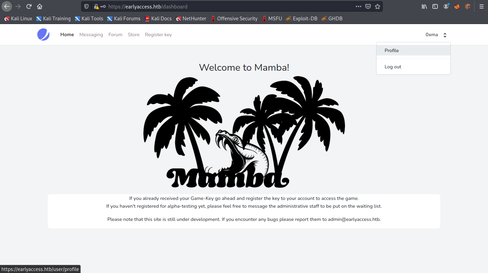
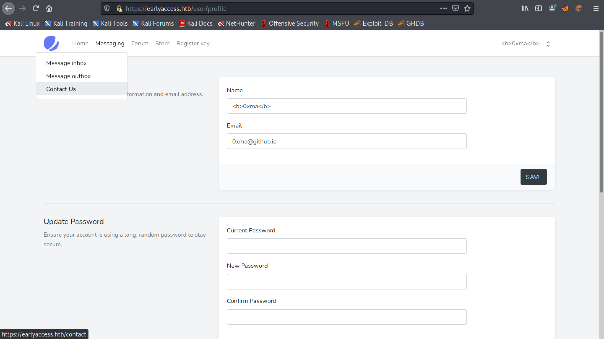

April 17, 2022
Cross-Site Scripting (XSS) Attack - Example 2
In this tutorial, we will see how to perform a cross-site scripting (XSS) attack and retrieve cookies of another user. We inject the XSS payload in the username section of the user's profile. Once the user sends a message to the site administrators, the XSS payload is triggered and we retrieve the cookies.
Let's register a user.
Once registered, it redirects us to the main page.
Click on the username and go to Profile.
This is the profile page where we can change the username, email and password.
Changing the username to include the <b> tags makes the username bold. If the username is displayed in bold text somewhere in the web application, then it is a good indication that the web application might be vulnerable to XSS attacks.
The username shown at the top-right corner of the page shows the <b> tags and the username is not displayed in bold.
Let's see if the username is displayed in bold text in other places of the web application. We go to the "Contact Us" page.
Let's type something in the form and click on "Send".
The form has been submitted successfully.
Click on the "Message to: admin" link.
We can see that the username "0xma" is in bold. In case it is not visible, I will try to italicize the username.
Let's surround the username with <i> tags to italicize it.
Submit the form.
And now we can see that the username is displayed in italics.
Our next step is to steal the cookies. Let's use some JavaScript to connect to the local server which we initiate by running the sudo python3 -m http.server 80 command in the terminal. Note that this command runs a web server on our local machine and opens port 80. Once it connects to the web server, it will reveal its cookies.
Let's submit the form once again.
Click on the "Message to: admin" link.
We get a "Error response" page with error code 404. Unlike the last time, we don't see our message.
Whenever someone on the target side checks the message, it will send the cookie to the local web server in a GET request. After a couple of minutes, we get a GET request which includes the session cookies.

Let's URL Decode our session cookies in CyberChef. However, we could do this in Burp Suite as well.
Right-click on the browser page and then click on "Inspect". The Storage tab shows the cookies.
Enter in the URL decoded session cookie.
Now the user is logged in as the "admin" user.
If you liked reading this article, you can follow me on Twitter: mujtabareads.
- Second Order SQL Injection - Example 2
- SQL Injection - Example 1
- XSS (Cross-Site Scripting) - Example 1
- Second Order SQL Injection - Example 1
- Server Side Template Injection (SSTI) - Example 1
- Node Cookie Deserialization Command Injection
- XXE Injection
- NoSQL Authentication Bypass
- WPAdmin Shell Upload
- Reverse Shell in WordPress via Theme (Template) Edit Feature
- Escalate Privileges via pip
- Escalate Privileges by Modifying the /etc/passwd File
- wp_admin_shell_upload
- Extract Passwords with LaZagne
- Bruteforce Windows Server SMB Credentials with Medusa
- Brute Force Windows Server SMB Credentials with Hydra
- Brute Force Windows Server SMB Credentials with NCrack
- Brute Force Windows Server SMB Credentials with CrackMapExec
- Brute Force Windows Server SMB Credentials with Metasploit
- Exploit PrintNightmare